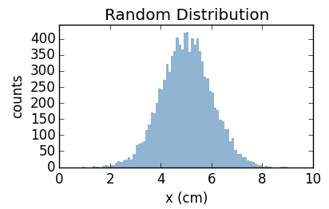
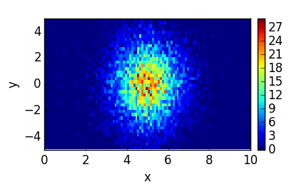
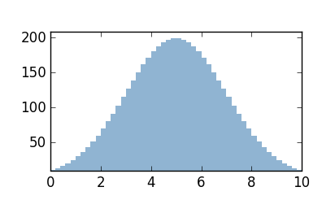
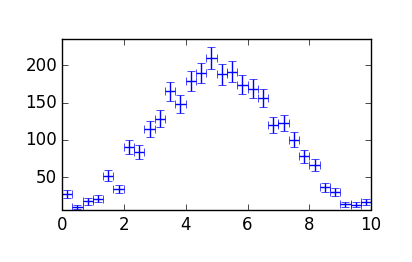
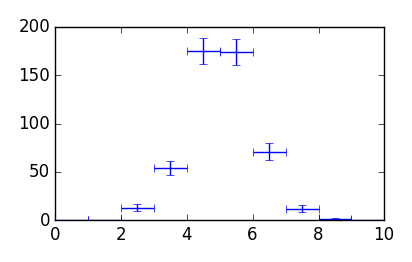
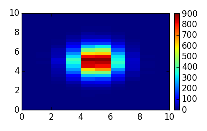
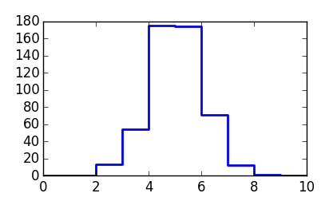

Histogram¶
- class histogram.Histogram(*axes, **kwargs)[source]¶
N-dimensional histogram over a continuous range
This is a histogram where each axis is a continuous (non-discrete) range with a set number of bins. The binning does not have to be evenly spaced.
Parameters: axes (list) – List of HistogramAxis or constructor parameters thereof. These are the axis definitions.
Keyword Arguments: - label (str) – Label for the filled data.
- title (str) – Title of this histogram.
- data (scalar array) – N-dimensional array for the filled data.
- uncert (scalar array) – N-dimensional array for the uncertainty.
- dtype (scalar type) – Type of the data array (data will be
- converted).
Example
Typical usage would be to fill the histogram from a sample of data. In this example, we create a 1D histogram with 100 bins from 0 to 10, and fill it with 10k samples distributed normally around 5 with a width (sigma) of 1:
import numpy as np from matplotlib import pyplot from histogram import Histogram h = Histogram(100, [0,10],'x (cm)','counts','Random Distribution') h.fill(np.random.normal(5,1,10000)) fig,ax = pyplot.subplots(figsize=(4,2.5)) fig.subplots_adjust(left=.18,bottom=.2,right=.95,top=.88) pt = ax.plothist(h,color='steelblue') pyplot.show()
Internal Data Attributes
axes data numpy.ndarray of the filled data label Label of the filled data in this histogram title Title of this histogram uncert numpy.ndarray of the absolute uncertainty Attributes
binvolumes Volumes of each bin binwidths Widths of all bins along each axis dim Dimension of this histogram (number of axes) dtype(that[, div]) Return dtype that should result from a binary operation edge_grid Meshgrid built from the axes’ edges edges Edges of each axis as a tuple grid Meshgrid of the bincenters of each axis max([uncert]) Maximum value of the filled data min([uncert]) Minimum value of the filled data overflow Guaranteed overflow point when filling this histogram shape Shape of the histogram data size Total number of bins (size of data) Methods
__add__(that) Addition __call__(*xx, **kwargs) Value of histogram at a point __truediv__(that) Division __iadd__(that) In-place addition __itruediv__(that) In-place (true) division __imul__(that) In-place multiplication __isub__(that) In-place subtraction __mul__(that) Multiplication __radd__(that) Commuting addition __rtruediv__(that) Commuting (true) division __rmul__(that) Commuting mulitplication __rsub__(that) Commuting subtraction __str__() Breif string representation of the data __sub__(that) Subtraction added_uncert(that) Added uncertainty by absolute values added_uncert_ratio(that[, nans]) Added uncertainty by ratios of the data asdict() Dictionary representation of this histogram asline([xlow, xhigh]) Points describing this histogram as a line aspolygon([xlow, xhigh, ymin]) Return a polygon of the histogram binwidth([b, axis]) Width of a specific bin b along an axis clear_nans([val]) Set all non-finite bins to a specific value clone([dtype]) Create a complete copy of this histogram cut(*args, **kwargs) Truncate a histogram along one or more axes. errorbars([maxdim, asratio]) Bin half-widths and data uncertainties extent([maxdim, uncert, pad]) Extent of axes and data fill(*args) Fill histogram with sample data fill_from_sample(sample[, weights]) Fill histogram from sample of data fill_one(pt[, wt]) Fill a single data point fit(fcn, p0, **kwargs) Fit a function to the histogram fromdict(**kwargs) Create new Histogram from a dictionary integral([uncert]) Total integral of the histogram interpolate_nans([method]) Replace non-finite bins with interpolated values isuniform([rtol, atol]) Check if all axes are uniform mean() Mean position of the data along the axes occupancy([bins, limits]) Histogram the filled data of this histogram projection([axis]) Projection onto a single axis rebin([nbins, axis, snap, clip]) Create new histogram with merged bins reset() Set data to zero and uncertainty to None. set(val[, uncert]) Set filled data to specific value slices([axis]) Generator of histograms along specified axis slices_data([axis]) Iterable over the data along specified axis slices_uncert([axis]) Iterable over the uncertainty along specified axis smooth([weight, mode]) Create a new smoothed histogram using a Gaussian filter std() Standard deviation of the data along the axes sum(*axes) Sum of bin values or sum along one or more axes
Axes, Shape and Labels¶
Methods specific to the axes of this histogram including size, shape and labels.
- Histogram.axes¶
This is a list of the HistogramAxis objects in the same order as the dimensions of the Histogram.data attribute. This should not typically be changed after constructing the Histogram in the first place.
Example:
One can access the underlying axes by the index. Here we create a 2D histogram, fill it and change the axes labels afterwards before plotting:
import numpy as np from matplotlib import pyplot from histogram import Histogram datax = np.random.normal(5,1,10000) datay = np.random.normal(0,2,10000) h = Histogram((100,[0,10]), (40, [-5,5])) h.fill(datax,datay) h.axes[0].label = 'x' h.axes[1].label = 'y' fig,ax = pyplot.subplots(figsize=(4,2.5)) fig.subplots_adjust(left=.15,bottom=.2,right=.9) pt,cb = ax.plothist(h) pyplot.show()
- Histogram.binvolumes[source]¶
Volumes of each bin
Volume is defined as the product of the bin-widths along each axis for the given bin. For 1D histogram, this is the same as Histogram.binwidths. For 2D histograms, this returns a 2D array like the following where dxi is the width of the ith bin along the x-axis (first, index = 0):
[ [ dx0*dy0, dx0*dy1 ... ], [ dx1*dy0, dx1*dy1 ... ], ... ] = h2.binvolumes h.binvolumes[i,j] = dxi * dyj
- Histogram.binwidth(b=1, axis=0)[source]¶
Width of a specific bin b along an axis
Parameters: Note
Default is the second bin (index = 1) in the first (index = 0) axis.
- Histogram.binwidths[source]¶
Widths of all bins along each axis
This will always return a tuple:
dx,dy = h2.binwidths
Here, dx and dy are arrays of the widths of each bin along the x and y axes respecitively. For 1D histograms, the output is still a tuple so typically, one should expand this out with a comma:
dx, = h1.binwidths
- Histogram.edge_grid[source]¶
Meshgrid built from the axes’ edges
This is the same as Histogram.grid() but for the edges of each axis instead of the bin centers.
- Histogram.edges[source]¶
Edges of each axis as a tuple
Output is in the form:
( [x0,x1..], [y0,y1...] ... )
- Histogram.grid[source]¶
Meshgrid of the bincenters of each axis
This is a single array for 1D histograms - i.e. the bin-centers of the x-axis. For 2D histograms, this is a tuple of two 2D arrays:
XX,YY = h2.grid
Here, XX and YY are arrays of shape (xbins,ybins). For 1D histograms, the output is still a tuple so typically, one should expand this out with a comma:
xx, = h1.grid
- Histogram.isuniform(rtol=1e-05, atol=1e-08)[source]¶
Check if all axes are uniform
Returns “and” of HistogramAxis.isuniform() for each axis.
- Histogram.overflow[source]¶
Guaranteed overflow point when filling this histogram
For 1D histograms, this is a tuple of one value (x,) generated by HistogramAxis.overflow. For 2D histograms, this will look like (x,y).
Example:
from histogram import Histogram ha = Histogram(10,[0,10]) print(h) ha.fill(ha.overflow) print(h)
Output:
[0 0 0 0 0 0 0 0 0 0] [0 0 0 0 0 0 0 0 0 0]
Data, Uncertainty and Statistics¶
Access to the filled data, associated uncertainty and various properties of the histogram.
- Histogram.data[source]¶
numpy.ndarray of the filled data
The indexes are in the same order as the HistogramAxis objects in the list stored in Histogram.axes. One can set this directly - shape is checked and data is written “in-place” when possible.
Example
Here, we create a histogram and set the data directly:
from scipy import stats from matplotlib import pyplot from histogram import Histogram h = Histogram(50, [0,10]) xx, = h.grid h.data = 1000 * stats.norm(5,2).pdf(xx) fig,ax = pyplot.subplots(figsize=(4,2.5)) fig.subplots_adjust(left=.15,bottom=.2,right=.9,top=.85) pt = ax.plothist(h,color='steelblue') pyplot.show()
- Histogram.uncert[source]¶
numpy.ndarray of the absolute uncertainty
This has the same shape as Histogram.data or None. Under certain cases, this will be set automatically to the square-root of the data (Poisson statistics assumption).
Example
When histogramming a sample of randomly distributed data, the uncertainty of each bin is the equal to the square-root of the counts in that bin:
import numpy as np from scipy import stats from numpy import random as rand from matplotlib import pyplot from histogram import Histogram rand.seed(1) h = Histogram(30, [0,10]) xx, = h.grid h.data = 1000 * stats.norm(5,2).pdf(xx) h.data += rand.normal(0,10,xx.shape) h.uncert = np.sqrt(h.data) fig,ax = pyplot.subplots(figsize=(4,2.5)) fig.subplots_adjust(left=.15,bottom=.2,right=.9,top=.85) pt = ax.plothist(h,style='errorbar') pyplot.show()
- Histogram.dtype(that, div=False)[source]¶
Return dtype that should result from a binary operation
Default is the result for addition, subtraction or multiplication. With div = True, this will always return float64.
- Histogram.errorbars(maxdim=2, asratio=False)[source]¶
Bin half-widths and data uncertainties
Keyword Arguments: - maxdim (int) – Number of dimensions to return (default: 2).
- asratio (bool) – Return ratios instead of absolute values (default: False).
Returns: Errors to be used for plotting this histogram.
Return type: list of arrays
Example:
from numpy import random as rand from matplotlib import pyplot from histogram import Histogram rand.seed(1) h = Histogram(10,[0,10]) h.fill(rand.normal(5,1,500)) x, = h.grid y = h.data xerr,yerr = h.errorbars() fig,ax = pyplot.subplots(figsize=(4,2.5)) pt = ax.errorbar(x,y,xerr=xerr,yerr=yerr,ls='none') fig.tight_layout() pyplot.show()
- Histogram.integral(uncert=False)[source]¶
Total integral of the histogram
This is the sum of each bin multiplied by the volume of the bins. If uncert=True is given, then the output is the 2-tuple: (integral, uncertainty).
- Histogram.max(uncert=False)[source]¶
Maximum value of the filled data
This will include the uncertainty if uncert=True. Uncertainty is calculated as the square-root of the data if not already set.
- Histogram.mean()[source]¶
Mean position of the data along the axes
Returns: Mean (float) along each axis: (xmean,ymean...). Return type: tuple This will ignore all nan and inf values in the histogram. Bin-centers are used as the position and non-equal widths are incorporated into the weighting of the results.
- Histogram.min(uncert=False)[source]¶
Minimum value of the filled data
This will include the uncertainty if uncert=True. Uncertainty is calculated as the square-root of the data if not already set.
- Histogram.std()[source]¶
Standard deviation of the data along the axes
Returns: Standard deviation (float) along each axis: (xstd,ystd...). Return type: tuple This is the square-root of the variance and will ignore all nan and inf values in the histogram. Bin-centers are used as the position and non-equal widths are incorporated into the weighting of the results.
Filling Histogram with Data¶
- Histogram.fill(*args)[source]¶
Fill histogram with sample data
Arguments (\*args) are the sample of data an optional associated weights. Weights may be a single number or an array of length N. The default (None) is equivalent to weights=1. Example:
from histogram import Histogram ### 1D Example h = Histogram(10,[0,10]) h.fill(1) # single value h.fill(2,2) # single value with weight h.fill([3,3,3]) # data sample h.fill([4,4],2) # data sample with constant weight h.fill([5,5],[2,3]) # data sample with variable weights print(h) # output: # [0 1 2 3 4 5 0 0 0 0] ### 2D Example h = Histogram(3,[0,3],10,[0,10]) xdata = [0,0,1,1,2] ydata = [1,2,3,4,5] weights = [1,2,3,4,5] h.fill(xdata,ydata,weights) print(h) # output: # [[0 1 2 0 0 0 0 0 0 0] # [0 0 0 3 4 0 0 0 0 0] # [0 0 0 0 0 5 0 0 0 0]]
- Histogram.fill_from_sample(sample, weights=None)[source]¶
Fill histogram from sample of data
This fills the histogram from sample with shape (D,N) array where D is the dimension of the histogram and N is the number of points to fill. The optional weights may be a single number or an array of length N. The default (None) is equivalent to weights = 1.
This is the primary work-horse of the Histogram class and should be favored, along with the wrapper method Histogram.fill() over Histogram.fill_one().
Example:
from numpy import random as rand from matplotlib import pyplot from histogram import Histogram rand.seed(1) ### 1D Example h = Histogram(10,[0,10], 30,[0,10]) h.fill_from_sample(rand.normal(5,1,(2,20000))) fig,ax = pyplot.subplots(figsize=(4,2.5)) pt = ax.plothist(h) fig.tight_layout() pyplot.show()
- Histogram.fill_one(pt, wt=1)[source]¶
Fill a single data point
This increments a single bin by weight wt. While it is the fastest method for a single entry, it should only be used as a last resort because its roughly 10 times slower than Histogram.fill_from_sample() when filling many entries.
Transformations¶
Methods which generally return a new histogram representing the same data in some transformed view, sometimes with a loss of information (eg. merged bins).
- Histogram.cut(*args, **kwargs)[source]¶
Truncate a histogram along one or more axes.
To cut (truncate) a one dimensional histogram from 0 to 5, each of the following are valid. This will also cut an ND histogram along the first (x) axis:
hcut = h.cut(0,5) hcut = h.cut((0,5)) hcut = h.cut(0,5, axis=0) hcut = h.cut((0,5), axis=0)
To cut along the second (y) axis, you can do the following:
hcut = h.cut(0,5, axis=1) hcut = h.cut((0,5), axis=1) hcut = h.cut(None, (0,5)) hcut = h.cut((None,None), (0,5))
To cut only on one side, None may be used to indicate +/- infinity. This makes a lower-bound type cut at 0:
hcut = h.cut(0,None)
Finally, to cut on multiple dimensions at once, the cut ranges can be strung together. These examples cut along the first axis (x) from 0 to 5 and along the second axis (y) from 1 to 6:
hcut = h.cut(0,5,1,6) hcut = h.cut((0,5),(1,6))
The first example above is useful for cutting 2D histogram using extent lists as used in other libraries like matplotlib:
hcut = h.cut(*ax.extent())
where, for example, ax.extent() returns the extent in the form:
[xmin,xmax,ymin,ymax]
- Histogram.interpolate_nans(method='cubic', **kwargs)[source]¶
Replace non-finite bins with interpolated values
Keyword Arguments: - method (str) – passed directly to scipy.interpolate.griddata() and controls the method of interpolation used.
- **kwargs – Passed directly to scipy.interpolate.griddata().
This modifies the histogram, changing the data in-place. Bins are considered non-finite if the filled value or the uncertainty is nan or inf.
- Histogram.occupancy(bins=100, limits=None, **kwargs)[source]¶
Histogram the filled data of this histogram
Returns a new histogram showing the occupancy of the data. This is effectively histograming the data points, ignoring the axes and uncertanties.
- Histogram.rebin(nbins=2, axis=0, snap='low', clip=True)[source]¶
Create new histogram with merged bins
Keyword Arguments: - nbins (int) – Number of bins to merge
- axis (int) – Axis along which to merge bins
- snap (str) – Controls edge behavior if nbins does not even divide the number of bins in this axis.
- clip (bool) – Wether or not to include the non-uniform bin in the case the bins does not evenly divide the number of bins in this axis.
- Histogram.smooth(weight=0.5, mode='nearest')[source]¶
Create a new smoothed histogram using a Gaussian filter
Keyword Arguments: - weight (float [0,1]) – Linear weighting for Gaussian filter. A value of 1 will replace the data with the actual result from scipy.ndimage.filters.gaussian_filter().
- mode (str) – Passed directly to scipy.ndimage.filters.gaussian_filter().
All non-finite bins are filled using Histogram.interpolate_nans() before the Gaussian filter is applied.
- Histogram.sum(*axes)[source]¶
Sum of bin values or sum along one or more axes
Optional Args:
axes (tuple of integers): Axes to sum over.Returns the sum over all values or sums only over specific axes and returns a new Histogram with reduced dimension.
Example:
from histogram import Histogram h = Histogram(10,[0,10]) h.fill([1,2,2,3,3,3,4,4,4,4]) print('sum of h:',h.sum()) h2 = Histogram(10,[0,10],10,[0,10]) h2.fill([1,2,2,3,3,3,4,4,4,4], [1,1,1,1,1,1,2,2,2,2]) print('h2 sum along axis 0:',h2.sum(0))
Output:
sum of h: 10 h2 sum along axis 0: [0 6 4 0 0 0 0 0 0 0]
Iterating¶
Fitting¶
Arithmetic¶
- Histogram.__iadd__(that)[source]¶
In-place addition
Uncertainty is not modified if both uncertainties are None.
- Histogram.__isub__(that)[source]¶
In-place subtraction
If the uncertainties are None, then Poisson statistics are assumed.
- Histogram.__itruediv__(that)[source]¶
In-place (true) division
If the uncertainties are None, then Poisson statistics are assumed. After division, nan and inf values are set to zero.
Misc¶
- Histogram.asdict()[source]¶
Dictionary representation of this histogram
This includes uncertainty, axes, labels and title and is used to serialize the histogram to NumPy’s binary format (see save_histogram_to_npz()).
- static Histogram.fromdict(**kwargs)[source]¶
Create new Histogram from a dictionary
Required Keywords:
- data
- edges0, edges1 ... edgesN
Optional Keywords:
- uncert
- label0, label1 ... labelN
- label
- title
where data is an N-dimensional numpy.ndarray, and edgei for i in [0,N] are 1-dimensional arrays specifying the edges along the ith dimension.
uncert is either the same shape array as data or None. label is the “counts” axis label of the histogram (string or None), and title is the overall title of the histogram object (string or None).
Notes
This is not typically used to create new Histogram objects, but is meant to be the counter-part to Histogram.asdict() for deserialization.
- Histogram.added_uncert(that)[source]¶
Added uncertainty by absolute values
Returns the uncertainty added directly in quadrature with another histogram. This assumes Poisson statistics (uncert = sqrt(data)) if uncert is None.
- Histogram.added_uncert_ratio(that, nans=0)[source]¶
Added uncertainty by ratios of the data
Returns the uncertainty added by ratio and in quadrature with another histogram. This assumes Poisson statistics (uncert = sqrt(data)) if uncert is None.
- Histogram.asline(xlow=None, xhigh=None)[source]¶
Points describing this histogram as a line
Parameters: - xlow (float or None) – Lower bound along axis.
- xhigh (float or None) – Upper bound along axis.
Returns: tuple: (x, y, extent)
- x (1D float array) - x-coordinate array.
- y (1D float array) - y-coordinate array.
- extent (tuple) - (xmin, xmax, ymin, ymax).
Example:
from numpy import random as rand from matplotlib import pyplot from histogram import Histogram rand.seed(1) h = Histogram(10,[0,10]) h.fill(rand.normal(5,1,500)) x,y,extent = h.asline() fig,ax = pyplot.subplots(figsize=(4,2.5)) pt = ax.plot(x,y,lw=2) fig.tight_layout() pyplot.show()
- Histogram.aspolygon(xlow=None, xhigh=None, ymin=0)[source]¶
Return a polygon of the histogram
Parameters: - ymin (scalar, optional) – Base-line for the polygon. Usually set to zero for histograms of integer fill-type.
- xlim (scalar 2-tuple, optional) – Range in x to be used.
Returns: tuple: (points, extent).
- points (scalar array) - Points defining the polygon beginning and ending with the point (xmin, ymin).
- extent (scalar tuple) - Extent of the resulting polygon in the form: [xmin, xmax, ymin, ymax].
- Histogram.__str__()[source]¶
Breif string representation of the data
Returns the string representation of the numpy array containing the data only. Axes, uncertainty and labels are ignored.
Example:
from numpy import random as rand from histogram import Histogram rand.seed(1) h = Histogram(10,[0,10]) h.fill(rand.normal(5,2,10000)) print(h)
output:
[ 164 428 909 1484 1915 1934 1525 873 467 175]
- Histogram.__call__(*xx, **kwargs)[source]¶
Value of histogram at a point
Returns the value of the histogram at a specific point (x,y...) or array of points (xx,yy...).
Parameters: xx (tuple of numbers or arrays) – Point(s) inside the axes of this histogram. Keyword Arguments: overflow (number) – Return value when the point lies outside this histogram. (default: 0) Example:
from numpy import random as rand from histogram import Histogram rand.seed(1) h = Histogram(10,[0,10]) h.fill(rand.normal(5,2,10000)) for x in [0.5,1.5,2.5]: print( h(x) )
output:
164 428 909